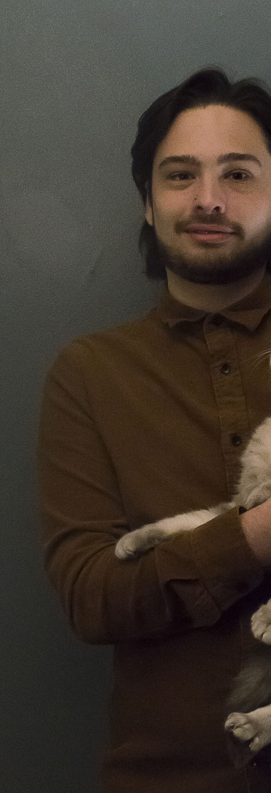
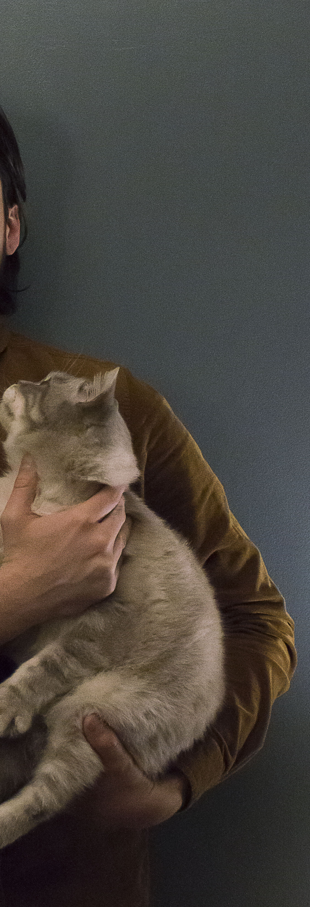

Work / About / Contact

Hello,
My name is Cameron Reese.
I am a Southcoast designer living in New Bedford Massachusetts. I have been a student of art since 2007. I started doing graphic design in my vocational shop during high school. I then attended Bristol Community College and graduated with an Associates Degree in Fine Arts. Currently I am attending UMASS Dartouth and majoring in Graphic Design. I have interests in Typography and Color Theory. I am passionate about finding color that enhances the design and I beleive that the color is the most important part of finding the tone of a peice. Typography intrigues me because i enjoy using type in unique ways that can pull the audiences attention right in and makes the peice more interesting. I am capable of HTML CSS, JavaScript, and using adobe products. In my spare time my interests are running, rock climbing, painting, drawing, visiting museums and attending different theatre productions.
